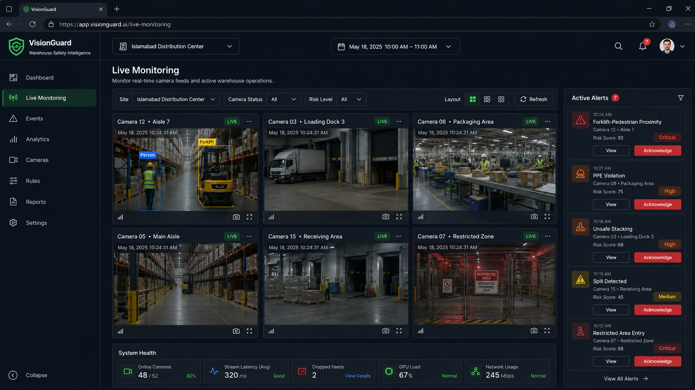
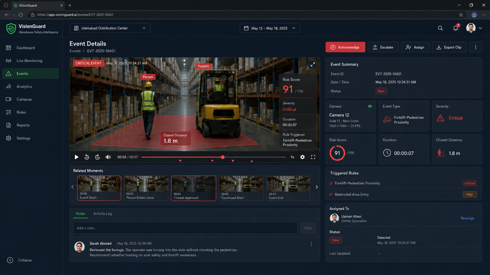
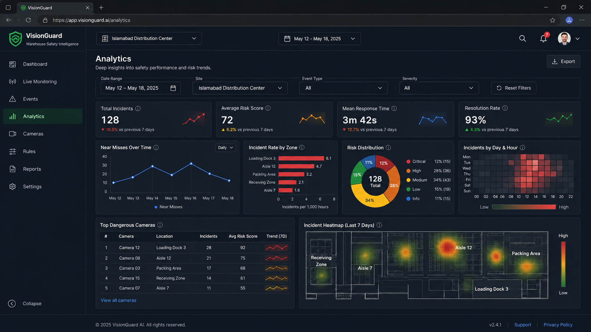
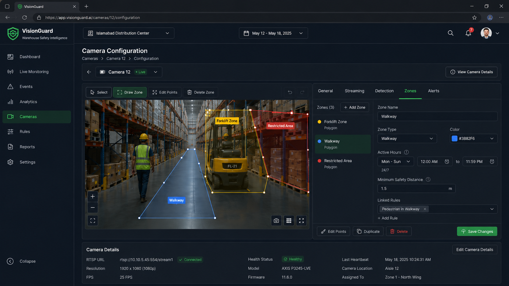
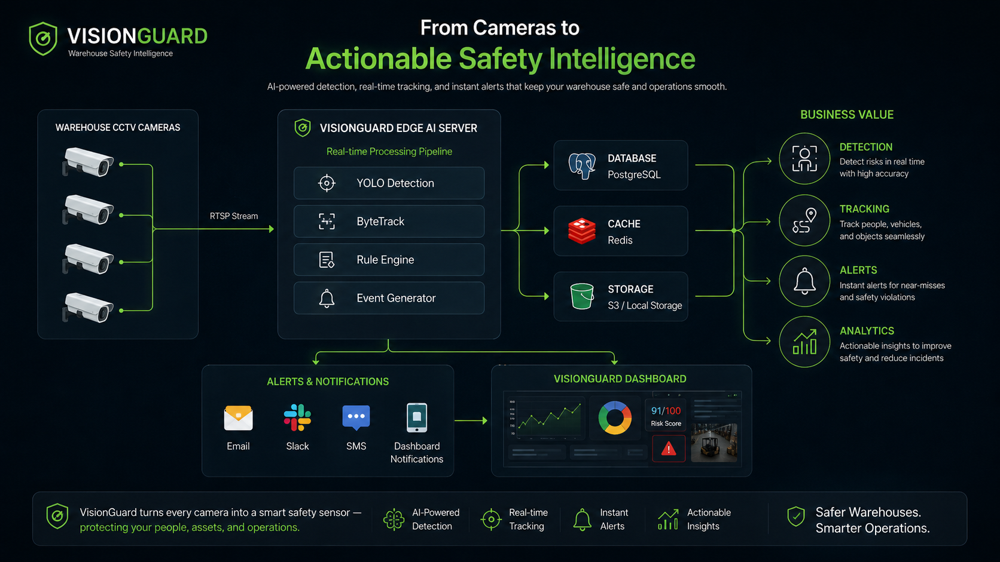
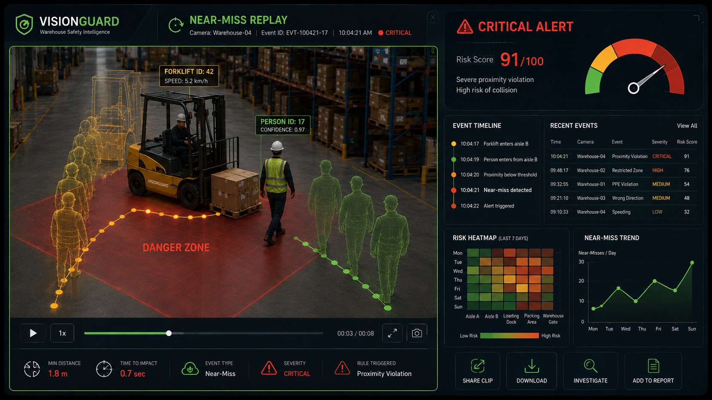

VisionGuard
AI-powered warehouse safety intelligence for detecting, tracking, analyzing and explaining forklift–pedestrian risk.
.png)







Overview
Most YOLO demos stop at detection and a bounding box. VisionGuard goes further — it transforms ordinary warehouse CCTV video into explainable safety events by chaining detection, multi-object tracking, ground-plane calibration, trajectory analysis, time-to-collision (TTC) prediction and a transparent, multi-signal risk score into one pipeline.
A detection alone is not an incident — an incident requires context. VisionGuard supplies that context through zones, real-world distance, motion history, closing speed and exposure duration, then automatically saves a video clip, snapshot and JSON explanation for every critical event.
Purpose — Why VisionGuard Exists
Forklift–pedestrian near-misses are one of the most common warehouse safety incidents, and manual review of hundreds of camera hours can't scale and rarely catches risk before it becomes an accident. VisionGuard exists to close that gap: it watches every camera continuously, understands warehouse geometry, and flags a dangerous moment before or as it happens — with evidence a safety officer can actually act on, not just a raw alarm.
Animated Pipeline
Key Features
Benefits
Flags dangerous forklift–pedestrian proximity before it becomes a collision.
Every event ships with a clip, snapshot and JSON — no more he-said/she-said reviews.
One pipeline monitors many cameras continuously without extra staff.
Turns raw footage into hotspot and near-miss trend data for safety teams.
Risk Model Weighting
Severity bands: 0–34 Low · 35–59 Medium · 60–79 High · 80–100 Critical.